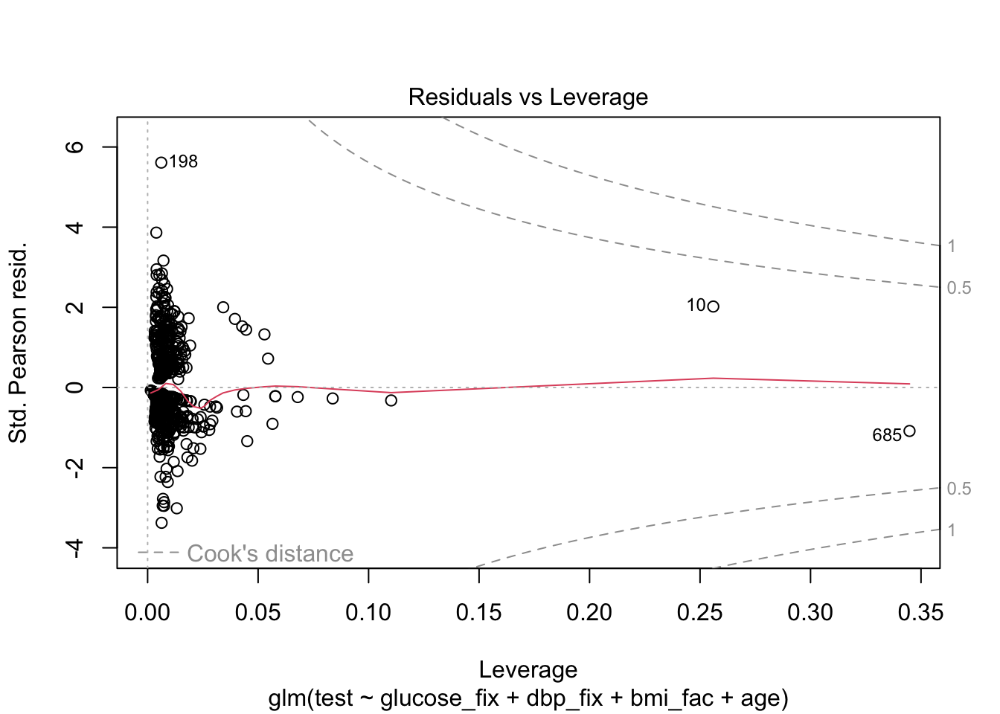
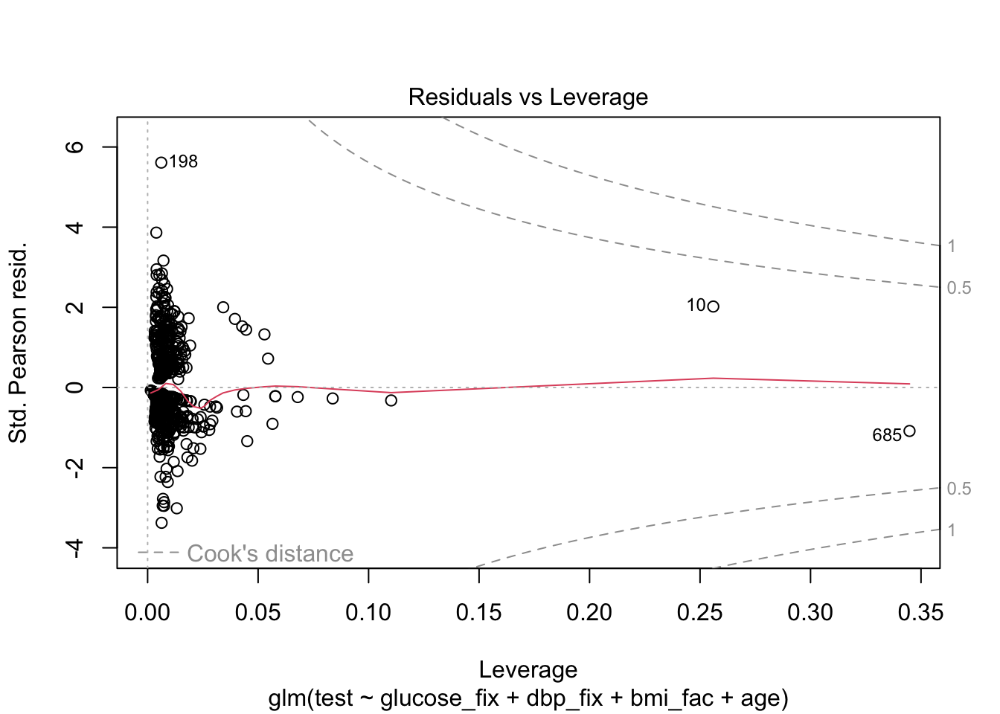

3 Logistic Regression
This is the first look at logistic regression in R along with some fun things we can do with the output.
We will use data from the faraway package as well as functions from the pROC package. You’ll probably need to install the pROC package
3.1 An Example: Diabetes risk factors
From Faraway Exercise 2, Chapter 2:
The National Institute of Diabetes and Digestive and Kidney Diseases conducted a study on 768 adult female Pima Indians living near Phoenix. The purpose of the study was to investigate factors related to diabetes.
Lets have a look at the data
## 'data.frame': 768 obs. of 15 variables:
## $ pregnant : int 6 1 8 1 0 5 3 10 2 8 ...
## $ glucose : int 148 85 183 89 137 116 78 115 197 125 ...
## $ diastolic : int 72 66 64 66 40 74 50 0 70 96 ...
## $ triceps : int 35 29 0 23 35 0 32 0 45 0 ...
## $ insulin : int 0 0 0 94 168 0 88 0 543 0 ...
## $ bmi : num 33.6 26.6 23.3 28.1 43.1 25.6 31 35.3 30.5 0 ...
## $ diabetes : num 0.627 0.351 0.672 0.167 2.288 ...
## $ age : int 50 31 32 21 33 30 26 29 53 54 ...
## $ test : int 1 0 1 0 1 0 1 0 1 1 ...
## $ insulin_fix: int NA NA NA 94 168 NA 88 NA 543 NA ...
## $ bmi_fix : num 33.6 26.6 23.3 28.1 43.1 25.6 31 35.3 30.5 NA ...
## $ glucose_fix: int 148 85 183 89 137 116 78 115 197 125 ...
## $ triceps_fix: int 35 29 NA 23 35 NA 32 NA 45 NA ...
## $ dbp_fix : int 35 29 0 23 35 0 32 NA 45 0 ...
## $ bmi_fac : Factor w/ 4 levels "normal","underweight",..: 4 3 1 3 4 3 4 4 4 2 ...So we see we have 768 observations on 9 variables. This is a nice sized dataset for both inference and prediction. However, we want to first explore the number of events as that’s the true limiting factor for judging power and precision in logistic regression.
##
## 0 1
## 500 268So our effective samples size is \(N_{positive} = 268\). Using the 15:1 rule of thumb:
- \(\frac{268}{15} \approx 18\) predictors would be ok, but we don’t even have that many
Unfortunately, there are zero values in some of the predictors that ought to be coded as missing. Some simple code for that is:
This is also true for bmi, glucose, and triceps. So we’ll fix those:
pima$bmi_fix <- ifelse(pima$bmi == 0, NA, pima$bmi)
pima$glucose_fix <- ifelse(pima$glucose == 0, NA, pima$glucose)
pima$triceps_fix <- ifelse(pima$triceps == 0, NA, pima$triceps)
pima$dbp_fix <- ifelse(pima$diastolic == 0, NA, pima$triceps)Now, we’re also going to make bmi a factor using the CDC ranges:
- Underweight: Less than 18.5
- Healthy Weight: 18.5 to less than 25
- Overweight: 25 to less than 30
- Obesity: 30 or greater
# use cut to turn the numeric variable into categories
pima$bmi_fac <- cut(pima$bmi, breaks = c(0,18.5,25,30,Inf), include.lowest = T, right = F)
# name the levels
levels(pima$bmi_fac) <- c("underweight","normal","overweight","obese")
# change the reference group to normal
pima$bmi_fac <- relevel(pima$bmi_fac, ref = "normal")
# check the releveling
contrasts(pima$bmi_fac)## underweight overweight obese
## normal 0 0 0
## underweight 1 0 0
## overweight 0 1 0
## obese 0 0 1Let’s try predicting the test result given some of the predictors
First we’ll start with basic stuff that should be related:
- Glucose concentration
- Diastolic blood pressure
- BMI (categorical)
- Age
We’re deliberately not including the diabetes variable since it will likely be very associated with the outcome. It turns out insulin is not associated so for numerical stability, we exclude it for now.
mod1 <- glm(test ~ glucose_fix + dbp_fix + bmi_fac + age, family = binomial, data = pima)
summary(mod1)##
## Call:
## glm(formula = test ~ glucose_fix + dbp_fix + bmi_fac + age, family = binomial,
## data = pima)
##
## Coefficients:
## Estimate Std. Error z value Pr(>|z|)
## (Intercept) -7.9008278 0.6867247 -11.505 < 2e-16 ***
## glucose_fix 0.0349670 0.0035238 9.923 < 2e-16 ***
## dbp_fix 0.0002151 0.0061522 0.035 0.97211
## bmi_facunderweight 0.7440401 1.2477671 0.596 0.55098
## bmi_facoverweight 1.2315584 0.4783102 2.575 0.01003 *
## bmi_facobese 2.2004434 0.4551304 4.835 1.33e-06 ***
## age 0.0310290 0.0081477 3.808 0.00014 ***
## ---
## Signif. codes: 0 '***' 0.001 '**' 0.01 '*' 0.05 '.' 0.1 ' ' 1
##
## (Dispersion parameter for binomial family taken to be 1)
##
## Null deviance: 936.6 on 727 degrees of freedom
## Residual deviance: 692.4 on 721 degrees of freedom
## (40 observations deleted due to missingness)
## AIC: 706.4
##
## Number of Fisher Scoring iterations: 5Note: our sample size goes down to \(N = 728\) and \(m = 250\) events, so we’re still doing very well in terms of the predictor to event ratio.
Clearly there are some associations. Let’s get the odds ratios and \(95\%\) CI’s:
## Waiting for profiling to be done...## OR 2.5 % 97.5 %
## (Intercept) 0.000 0.000 0.001
## glucose_fix 1.036 1.029 1.043
## dbp_fix 1.000 0.988 1.012
## bmi_facunderweight 2.104 0.093 18.513
## bmi_facoverweight 3.427 1.414 9.415
## bmi_facobese 9.029 3.941 23.938
## age 1.032 1.015 1.048Now often we’re interested in more than just 1 unit increase on numeric variables. What can we do to get the association between a 5 unit increase in glucose and odds of a positive test?
Solution:
- Take the regular odds ratio and raise it to the 5th power:
- \(\text{OR} = 1.036^{5} = 1.19\)
- So a 5-unit increase in glucose levels equates to \(19\%\) greater odds of a positive test
Similarly, as someone ages 10 years, their odds of a positive test increases by a factor of \({OR} = 1.032^{10} = 1.37\) so the odds are \(1.37\) times greater for someone who is 10 years older than average!
Now what about the BMI categories. Clearly, there are some differences in log-odds between higher BMI and normal, but what if we just wanted a test of whether BMI matters?
We use the likelihood ratio approach. We can do this in 2 ways:
drop1
## Single term deletions
##
## Model:
## test ~ glucose_fix + dbp_fix + bmi_fac + age
## Df Deviance AIC LRT Pr(>Chi)
## <none> 692.40 706.40
## glucose_fix 1 817.65 829.65 125.248 < 2.2e-16 ***
## dbp_fix 1 692.40 704.40 0.001 0.9721066
## bmi_fac 3 734.94 742.94 42.538 3.085e-09 ***
## age 1 707.10 719.10 14.699 0.0001261 ***
## ---
## Signif. codes: 0 '***' 0.001 '**' 0.01 '*' 0.05 '.' 0.1 ' ' 1Fit a reduced model and use anova
## Analysis of Deviance Table
##
## Model 1: test ~ glucose_fix + dbp_fix + age
## Model 2: test ~ glucose_fix + dbp_fix + bmi_fac + age
## Resid. Df Resid. Dev Df Deviance Pr(>Chi)
## 1 724 734.94
## 2 721 692.40 3 42.538 3.085e-09 ***
## ---
## Signif. codes: 0 '***' 0.001 '**' 0.01 '*' 0.05 '.' 0.1 ' ' 1So you can see, that drop1 is just a short-cut to fitting a restricted model and testing with a likelihood-ratio test using anova.
As we said, we’ll skip the diagnostics, but here’s what they might look like.


 

Finally, let’s try to understand model fit via ROC and Nagelkerke’s pseudo-\(R^{2}\). We can get an even better look at how well our model actual predicts the test results by making calibration plots, but we’ll come back to those later in the course.
3.2 Model Discrimination and Fit
If we were simply interested in whether the test could replace another test, then we only need cross-classification of the two tests for sensitivity and specificity. However, we use the two here to judge whether the use of our model equation can potentially provide helpful information to discriminate between positive and negative cases.
The ROC and AUROC are only part of the story, but they’re helpful.
We’ll begin first by picking an arbitrary probability threshold from our model. That is, the model equation can be transformed from log-odds to probability with the logistic function:
If \(\eta\) is the linear predictor (our model equation), then
\[ p_{predict} = \frac{\exp^{\eta}}{1+ \exp^{\eta}} \]
For example:
Person 41 has the following values of the predictors:
## glucose_fix dbp_fix bmi_fac age
## 41 180 25 obese 26## [1] 0We also see that this person’s test result is negative. Let’s use the equation to predict the probability that this person tests positive, pretending that we don’t know their true result:
## (Intercept) glucose_fix dbp_fix bmi_facunderweight bmi_facoverweight
## -7.9008278062 0.0349670205 0.0002151114 0.7440400790 1.2315583898
## bmi_facobese age
## 2.2004433703 0.0310290344\[ \begin{align} \log(odds) & = -7.901 + (0.035\times 180) + (0.0002 \times 25) + (1 \times 2.200) + (0.031\times 26)&\\ &= -7.901 + 6.3 + 0.005 + 2.20 + 0.806\\ &= 1.41 \end{align} \] So this person’s prediction is 1.41 logits. Obviously, that’s not helpful, but this is their value of \(\eta\) so we plug into the equation for probability:
\[ \begin{align} \hat{p} & = \frac{\exp^{1.41}}{1 + \exp^{1.41}} &\\ & = 0.804 \end{align} \] So on average \(0.804\) proportion of the population with those covariate values should have a positive test.
Clearly, we might want to set a high threshold for prediction if someone with a predicted probability of \(0.804\) is not a positive case.
Here, we’ll set the threshold at the arbitrary value of \(0.51\)
Also, due to missing data in our dataset, we’ll make a new dataframe using the model
pima_pred <- mod1$model
## sensitivity and specificity
# set a threshold
thresh <- .51
# add predicted probabilities to dataset
pima_pred$pred.prob <- predict(mod1, type = "response")
# create binary prediction
pima_pred$pred.response <- ifelse(pima_pred$pred.prob > thresh, "yes","no")
# confusion matrix
(thresh51 <- xtabs(~ test + pred.response, data = pima_pred))## pred.response
## test no yes
## 0 426 52
## 1 119 131## [1] 0.524## [1] 0.8912134Now, remember, this is only for that given threshold. The ROC can help us choose an optimal threshold and give us some idea of our overall ability to determine positive from negative cases given values of the covariates.
What we’re plotting is sensitivity and specificity for every choice of threshold between \(0\) and \(1\). So we’ll get a wiggly line because in this dataset, there are \(725\) different thresholds!
Note, the pROC package, which we’ll use, produces a plot with specificity on the x-axis. You’re probably more familiar with a plot that has \(1-\text{specificity}\) on the x-axis (the false positive rate). This curve is the same, it just starts at a different place.
3.2.1 ROC and AUROC
## Setting levels: control = 0, case = 1## Setting direction: controls < cases
## Area under the curve: 0.8273## 95% CI: 0.7973-0.8573 (DeLong)Finally, we can chose one of a number of goodness of fit measures. You may have heard of the Hosmer-Lemeshow statistic, which is essentially a \(\chi^{2}\) goodness of fit test between the mean response of some set of the population \(y_{i}\) and the predicted probability from the model, in a “bin” of data with \(m_{j}\) observations.
Because it depends on a choice of bin size \(m_i\), we’ll leave it until we cover calibration in Week 5.
Instead, we’ll compute the Nagelkerke pseudo-\(R^{2}\) which is a little easier, and doesn’t depend on a special R package.
mod.dev <- mod1$deviance
null.dev <- mod1$null.deviance
n <- nrow(pima_pred)
(1-exp((mod.dev - null.dev)/n))/(1-exp(-null.dev/n))## [1] 0.3937377